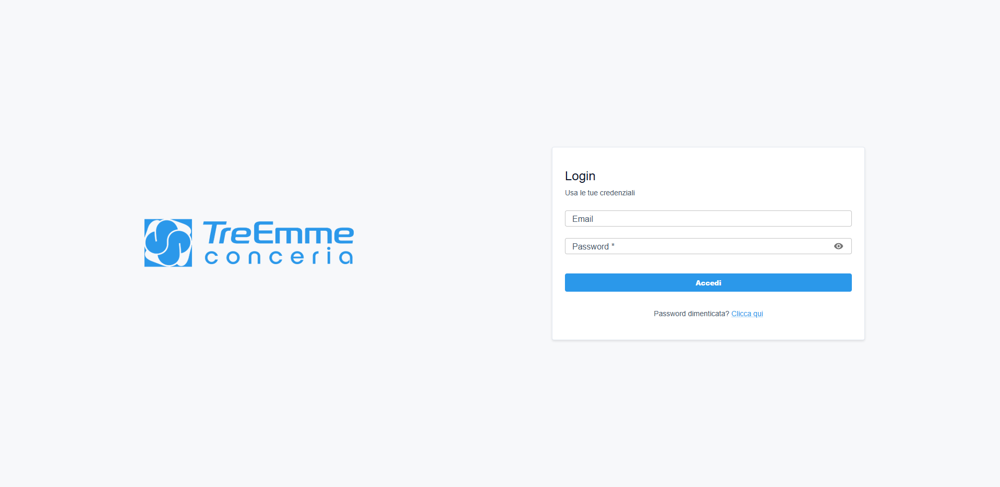

Il progetto: software gestionale per Conceria Tre Emme
2.1 Contesto e obiettivi del progetto
Conceria Tre Emme è un'azienda operante nel settore della lavorazione delle pelli che da oltre vent'anni utilizzava un software gestionale sviluppato con tecnologie obsolete. Il vecchio applicativo presentava problemi sempre più pressanti: lentezza operativa, vulnerabilità di sicurezza e un'interfaccia utente datata, tipica delle applicazioni Windows XP. La manutenzione del software era divenuta complessa e costosa, e l'azienda sentiva l'esigenza di modernizzare il proprio strumento di lavoro senza però stravolgere i processi operativi consolidati.
 Interfaccia del precedente software gestionale, sviluppato con logica Windows XP, caratterizzato da un'interfaccia utente datata e limitate funzionalità di interazione. Nella schermata è visibile il pannello di gestione pellami.
Interfaccia del precedente software gestionale, sviluppato con logica Windows XP, caratterizzato da un'interfaccia utente datata e limitate funzionalità di interazione. Nella schermata è visibile il pannello di gestione pellami.
Il cliente ha quindi richiesto un software veloce, con un'interfaccia utente moderna, che non modificasse radicalmente la logica di interazione già nota agli operatori. L'obiettivo era sostituire il vecchio gestionale con una soluzione web-based, accessibile da browser, performante e con un'esperienza utente migliorata.
Per tutta la durata dello sviluppo, ho avuto accesso al computer remoto della conceria per studiare i form dei pannelli già esistenti, in modo da replicarne la struttura e la logica operativa nella nuova interfaccia.

Nuova interfaccia di login del gestionale Treemme, con design moderno e sistema di autenticazione a due fattori.
 Nuova interfaccia del gestionale: pannello di gestione pellami e lotti, con tabella filtrabile e form di inserimento.
Nuova interfaccia del gestionale: pannello di gestione pellami e lotti, con tabella filtrabile e form di inserimento.
Il progetto si è posto i seguenti obiettivi principali: sostituire il software legacy con un'applicazione web moderna e performante, mantenendo inalterata la logica operativa per non disorientare gli utenti finali. È stato inoltre necessario garantire elevati standard di sicurezza nella gestione dei dati aziendali, fornire un'interfaccia a pannelli modulari che consentisse la gestione di tutte le aree funzionali della conceria e realizzare un sistema di permessi granulare per la gestione degli accessi agli utenti.
2.2 Target di riferimento e stakeholder
Il target primario del progetto è costituito dagli operatori di Conceria Tre Emme che quotidianamente utilizzano il software per svolgere le proprie mansioni: impiegati amministrativi, responsabili di produzione, magazzinieri e operatori logistici. Ogni figura professionale interagisce con moduli specifici del gestionale in base al proprio ruolo e alle proprie mansioni.
Gli stakeholder del progetto includono la proprietà di Conceria Tre Emme in qualità di committente del software, i responsabili di produzione che necessitano di monitorare l'avanzamento dei lotti, gli operatori amministrativi che gestiscono anagrafiche, ordini e documenti di trasporto e il team di sviluppo di NetEvolution che ha progettato e realizzato la soluzione.
2.3 Requisiti del progetto
I requisiti del progetto sono emersi sia dall'analisi del software legacy sia dal confronto con il collega, che faceva da tramite con gli operatori della conceria. Possono essere suddivisi in requisiti funzionali e non funzionali.
Requisiti funzionali: Il software doveva offrire la gestione delle anagrafiche, includendo contatti, fornitori, vettori, agenti e dati territoriali come CAP, province, nazioni e porti. Per il settore produttivo era necessaria la gestione dei pellami con specie, origini, tipologie, pesi, spessori, scuoiatura e stadi di concia, affiancata dalla gestione degli articoli con tipologie, colori, classi, categorie e stampe. Sul fronte commerciale, il sistema doveva supportare la gestione degli ordini cliente con le relative righe d'ordine, mentre per la produzione era indispensabile la gestione dei lotti con composizione, movimenti di magazzino, costi, suddivisione e rilavorazione. Erano inoltre richiesti la gestione dei documenti di trasporto (DDT) con le relative righe, la visualizzazione del magazzino con partite e movimenti, l'analisi dei dati di vendita e dei movimenti esterni con funzionalità di stampa, la gestione degli utenti con permessi basati su gruppi e risorse e l'autenticazione con supporto OTP (One-Time Password).
Requisiti non funzionali: L'applicazione doveva offrire un'interfaccia a pannelli modulari con possibilità di apertura simultanea di più moduli, garantendo reattività e bassa latenza nelle operazioni di caricamento e salvataggio dei dati. L'interfaccia utente doveva essere moderna, chiara e intuitiva, con supporto multilingua italiano e inglese, tema chiaro e scuro personalizzabile e scorciatoie da tastiera per le operazioni frequenti come creazione, modifica, salvataggio e annullamento. Infine, era richiesta la sicurezza dei dati con un sistema di autenticazione robusta.
2.4 Metodologie e tecnologie adottate
Le tecnologie e le librerie scelte sono state adottate nello specifico per comprendere come realizzare l'interfaccia modulare a pannelli e perché sono tecnologie già consolidate e utilizzate anche in altri progetti in azienda.
Stack tecnologico frontend:
| Layer | Tecnologia |
|---|
| Framework UI | React 19 |
| Linguaggio | TypeScript 5.9 (strict mode) |
| Build tool | Vite 7 |
| Router | react-router v7 |
| Stato server | TanStack React Query 5 |
| Stato client | Zustand 5 |
| HTTP client | Axios 1 |
| Libreria UI | Material-UI (MUI) 7 |
| Pannelli modulari | Dockview 5 |
| Form | react-hook-form |
| Tabelle | material-react-table (MRT) |
| Internazionalizzazione | i18next + react-i18next |
| Notifiche | notistack |
| Date | dayjs |
Stack tecnologico backend (realizzato dal collega): il backend è stato sviluppato con Symfony (PHP) come framework, MySQL come database relazionale e API RESTful con autenticazione basata su cookie JWT.
La motivazione alla base della scelta di React come framework frontend risiede nella sua ampia adozione nel panorama dello sviluppo web, nella ricchezza dell'ecosistema di librerie disponibili e nella sua efficienza nel gestire interfacce utente complesse e interattive. TypeScript è stato scelto per garantire una maggiore robustezza del codice grazie al sistema di tipi statici, fondamentale in un progetto con oltre 50 pannelli e centinaia di componenti.
Per la gestione dell'architettura a pannelli è stata adottata la libreria Dockview. Questa libreria consente agli utenti di aprire, chiudere, spostare e organizzare i pannelli in gruppi di tab, esattamente come avviene in un ambiente desktop. La scelta è ricaduta su Dockview perché offre un'API completa e flessibile per la gestione dei pannelli, supporta pannelli flottanti (popup) e si integra perfettamente con l'ecosistema React.
TanStack React Query è stato utilizzato per la gestione dello stato derivante dalle chiamate API. Questa libreria offre un sistema di caching intelligente che riduce il numero di richieste al server, gestisce automaticamente il refresh dei dati e fornisce hook dichiarativi per le operazioni CRUD. Particolarmente utile è stato il meccanismo di invalidazione automatica della cache: quando un pannello esegue una creazione, modifica o eliminazione, React Query invalida automaticamente i dati correlati, garantendo che l'interfaccia rifletta sempre lo stato più aggiornato del database.
Zustand è stato adottato per la gestione dello stato locale dei pannelli. A differenza di React Query, che gestisce lo stato dei dati provenienti dal server, Zustand si occupa dello stato puramente UI, come lo stato dei pulsanti del form, l'ID della riga selezionata nelle tabelle, i filtri attivi. Ogni pannello ha un proprio store Zustand isolato, creato dinamicamente all'apertura del pannello stesso, consentendo a più pannelli dello stesso tipo di coesistere senza conflitti di stato.
2.5 Architettura del frontend
L'architettura del frontend è organizzata secondo il pattern feature-sliced, che separa il codice in moduli funzionali (feature) e librerie condivise (shared). Questa suddivisione garantisce separazione delle responsabilità, riusabilità dei componenti e facilità di manutenzione. La struttura delle directory riflette questa organizzazione.
Struttura generale del progetto:
src/
apps/ # Entry point multi-app
default/ # App principale (main.tsx, provider hierarchy)
features/ # Moduli funzionali
auth/ # Autenticazione (login, OTP, logout)
authz/ # Autorizzazione (permessi resource-action)
panels/ # Pannelli dockview (il cuore dell'applicazione)
password-reset/ # Reset password
profile/ # Profilo utente
routing/ # Routing e guard
search/ # Ricerca globale
settings/ # Impostazioni
user/ # Gestione utenti e ruoli
shared/ # Moduli condivisi
api/ # Layer API (axios, useApi, query keys)
ui/ # Componenti UI riusabili
themes/ # Tema MUI (chiaro/scuro)
helpers/ # Utility (language detection)
interfaces/ # Interfacce condivise
L'architettura a pannelli modulari rappresenta il cuore dell'interfaccia. Il workspace principale è costituito da un contenitore Dockview che ospita i pannelli aperti. Ogni pannello corrisponde a una specifica entità gestionale (contatti, lotti, ordini, ecc.) ed è composto da tre componenti generici riusabili. Il primo è GenericPanel, un componente contenitore che fornisce il contesto del pannello e la struttura layout con lista in alto e form in basso. Il secondo è GenericList, un wrapper su material-react-table che visualizza i dati in una tabella con funzionalità di selezione, ordinamento e filtraggio. Il terzo è GenericForm, un componente complesso che orchestra l'intero ciclo di vita CRUD con gestione degli stati dei pulsanti, permessi, scorciatoie da tastiera e dialoghi di conferma.
 Schema dell'architettura a pannelli modulari con la relazione tra i tre componenti generici (GenericPanel, GenericList, GenericForm) e il flusso dei dati.
Schema dell'architettura a pannelli modulari con la relazione tra i tre componenti generici (GenericPanel, GenericList, GenericForm) e il flusso dei dati.
 Elenco completo dei pannelli dell'interfaccia, suddivisi per categoria funzionale: contatti, pellami, prodotti, ordini, produzione, DDT, magazzino, analisi e amministrazione.
Elenco completo dei pannelli dell'interfaccia, suddivisi per categoria funzionale: contatti, pellami, prodotti, ordini, produzione, DDT, magazzino, analisi e amministrazione.
Questa astrazione si è rivelata fondamentale per la produttività dello sviluppo. Invece di scrivere da capo la logica CRUD per ciascuno dei oltre 50 pannelli, ho definito una volta i componenti generici e poi ogni pannello specifico li ha implementati dichiarando solo le parti variabili: le colonne della tabella, i campi del form, l'endpoint API e le traduzioni. Questo approccio ha permesso di ridurre drasticamente i tempi di sviluppo e di garantire un comportamento coerente su tutta l'applicazione.
Pattern Factory per le API:
Per semplificare la definizione delle chiamate API CRUD, ho implementato il pattern Factory Method attraverso la funzione createPanelApiFactory. Questa factory genera automaticamente cinque hook TanStack Query per ciascun endpoint REST:
useGetList() → GET /endpoint (lettura lista)
useGetDetail(id) → GET /endpoint/:id (lettura dettaglio)
usePost() → POST /endpoint (creazione)
usePut() → PUT /endpoint/:id (modifica)
useDelete() → DELETE /endpoint/:id (eliminazione)
Ciascun hook gestisce automaticamente la cache, l'invalidazione dei dati dopo le mutazioni e la gestione degli errori. La definizione di un'API per un nuovo pannello si riduce a poche righe di codice:
export const batchApi = createPanelApi<IBatch>({
baseEndpoint: "/batch",
queryKey: "BATCH"
});
Questa factory astrae completamente la complessità della gestione delle chiamate HTTP e del caching, permettendo allo sviluppatore di concentrarsi sulla logica di business del singolo pannello.
Gestione dello stato dei pannelli:
Un aspetto critico dell'architettura è stata la gestione dello stato separato per ogni pannello. Poiché l'utente può aprire più pannelli contemporaneamente, anche dello stesso tipo, è fondamentale che ogni istanza mantenga il proprio stato indipendente. La soluzione adottata integra Zustand all'interno del componente GenericPanel: ogni pannello è avvolto da un proprio context React, all'interno del quale viene istanziata dinamicamente una factory di Zustand che genera uno store isolato. In questo modo si evita il problema di avere uno store globale tra più pannelli dello stesso tipo.
Pannello Lotti #1 — context #1 → store Zustand #1 — { selectedId: 5, formEnabled: false }
Pannello Lotti #2 — context #2 → store Zustand #2 — { selectedId: 12, formEnabled: true }
Pannello Contatti — context #3 → store Zustand #3 — { selectedId: 3, formEnabled: false }
Grazie a questo pattern, la modifica dello stato su un pannello non interferisce con gli altri e i componenti generici possono riutilizzare la stessa logica senza preoccuparsi dell'isolamento dello stato. La factory di Zustand, creata all'interno del context del GenericPanel, genera un nuovo store associato a un identificatore univoco ogni volta che un pannello viene aperto.
Comunicazione cross-pannello:
Un'altra funzionalità innovativa implementata è la comunicazione tra pannelli. Quando un operatore si trova all'interno di un form (ad esempio, Creazione Ordine) e deve selezionare un contatto che non esiste ancora, può premere invio sul campo select per aprire direttamente il pannello di creazione contatti. Una volta inserito il nuovo contatto, il sistema comunica automaticamente l'ID appena creato al pannello chiamante, popolando il campo select senza che l'utente debba ripetere la selezione.
 Esempio di comunicazione cross-pannello: la selezione di un contatto in un form apre automaticamente il pannello di creazione, con ritorno del dato al pannello chiamante.
Esempio di comunicazione cross-pannello: la selezione di un contatto in un form apre automaticamente il pannello di creazione, con ritorno del dato al pannello chiamante.
Questo meccanismo è stato realizzato utilizzando la cache di React Query come bus di comunicazione: il pannello creatore scrive l'ID dell'entità appena creata in una query key speciale (LAST_CREATED), mentre il pannello ricevente sottoscrive i cambiamenti di quella key tramite l'hook useSubscribePanel. In questo modo si evita l'accoppiamento diretto tra pannelli, mantenendo l'architettura modulare e disaccoppiata.
Scorciatoie da tastiera:
Per migliorare l'efficienza operativa, sono state implementate scorciatoie da tastiera che rispecchiano le abitudini degli utenti della conceria sul vecchio gestionale:
| Tasto | Azione |
|---|
| F4 | Abilita modifica dell'elemento selezionato |
| F9 | Abilita creazione di un nuovo elemento |
| F10 | Salva il form corrente |
| Esc | Annulla operazione o chiude pannello flottante |
Le scorciatoie sono attive solo sul pannello focalizzato, evitando conflitti quando più pannelli sono aperti contemporaneamente.
Schema del flusso di esecuzione:
Il seguente schema rappresenta l'analisi dei processi di concia realizzata per comprendere il flusso di apertura dei pannelli di inserimento dati nella gestione di lotti e ordini:
 Schema di analisi dei processi di concia: il diagramma illustra il flusso operativo che lega l'apertura dei pannelli alla gestione dei lotti di produzione e degli ordini cliente.
Schema di analisi dei processi di concia: il diagramma illustra il flusso operativo che lega l'apertura dei pannelli alla gestione dei lotti di produzione e degli ordini cliente.
Sistema di permessi e autenticazione:
Il software implementa un sistema di autenticazione a due fattori (password + OTP opzionale) e un sistema di autorizzazione granulare basato su risorse e azioni. Gli utenti appartengono a gruppi (Admin, Staff) e ciascun gruppo ha permessi specifici sulle risorse gestionali (contatti, produzione, ordini, ecc.). Il menu e le route vengono filtrati automaticamente in base ai permessi dell'utente, garantendo che ciascun operatore veda solo i moduli di sua competenza.
 Interfaccia di gestione dei permessi utente: selezione di gruppi e risorse per la configurazione degli accessi.
Interfaccia di gestione dei permessi utente: selezione di gruppi e risorse per la configurazione degli accessi.
Il sistema di autorizzazione opera su tre livelli: a livello di componente (visibilità dei pulsanti e delle sezioni), a livello di hook (verifica dei permessi prima di eseguire operazioni) e a livello di engine (controllo centralizzato delle policy). Questa architettura a strati garantisce che non sia possibile eludere i controlli di autorizzazione, nemmeno intervenendo direttamente sul codice frontend.
2.6 Organizzazione, struttura e modalità di lavoro in team
Il progetto è stato sviluppato da un team di due persone: io, dedicato al frontend, e un altro collega, dedicato al backend Symfony e alla struttura del database. Il frontend è stato realizzato principalmente da me, mentre un altro collega si è occupato dell'inizializzazione del progetto e della gestione dei ruoli utente. L'architettura generale e tutti i pannelli sono stati sviluppati interamente da me. La comunicazione tra i due ruoli è stata fondamentale per il buon esito del progetto.
Strumenti di collaborazione: Per il controllo versione è stato utilizzato Git con repository ospitato su GitHub, mentre il coordinamento quotidiano è avvenuto tramite comunicazione diretta in sede e messaggistica istantanea. È stato inoltre utilizzato l'accesso remoto al computer della conceria per l'analisi del software legacy.
Metodologia di lavoro:
Il progetto è stato affrontato con un approccio iterativo. Partendo dall'analisi del software esistente, ho progressivamente costruito l'interfaccia a pannelli, aggiungendo funzionalità in modo incrementale. Il flusso di lavoro tipico prevedeva l'analisi del pannello legacy e la comprensione dei campi dati, seguita dalla definizione dell'interfaccia TypeScript per l'entità e dalla creazione della factory API per le chiamate CRUD. Si procedeva quindi con lo sviluppo del componente pannello comprensivo di lista e form, la registrazione del pannello nel registry e l'aggiunta al menu, per concludere con il test di integrazione con le API backend e la correzione di eventuali discrepanze con raffinamento dell'interfaccia.
Ruolo autonomo:
Data l'assenza di figure senior nel team, ho avuto ampia libertà nelle scelte architetturali e implementative. Ho potuto decidere autonomamente la struttura dei componenti, le librerie da utilizzare e i pattern da adottare. Questa responsabilità ha rappresentato al contempo una sfida e un'opportunità di crescita, poiché ogni decisione doveva essere ponderata considerando l'impatto sulla manutenibilità e sulla scalabilità del progetto.
Risultati conseguiti
3.1 Risultati raggiunti
Al termine del periodo di sviluppo, il frontend del gestionale conta oltre 50 pannelli funzionanti, ciascuno dei quali implementa le operazioni CRUD complete per la propria entità gestionale. I pannelli sono suddivisi in dieci aree funzionali. L'area Contatti e anagrafiche comprende 12 pannelli dedicati a contatti, indirizzi, agenti, subappaltatori, dettagli contatto, corrieri, CAP, province, nazioni e porti. L'area Pellami conta 8 pannelli per la gestione di specie, origini, tipologie, pesi, spessori, scuoiatura e stadi di concia. Per i prodotti e articoli sono stati realizzati 10 pannelli che coprono prodotti, articoli, categorie, tipologie, colori, classi e stampe. L'area Ordini dispone di 4 pannelli per ordini cliente, righe d'ordine, tintura e raffinazione, mentre il settore Produzione, il più corposo con 12 pannelli, gestisce lotti, composizione, dati batch, movimenti, produzione, suddivisione, rilavorazione, macchinari, processi e lavorazioni. Per i Documenti di trasporto sono disponibili 4 pannelli per DDT, righe DDT, motivi di trasporto e subappalto non reso. L'area Magazzino conta 3 pannelli per partite, movimenti e pallet, mentre l'area Commerciale ne ha altrettanti per cambi valute, tipologie pagamento e condizioni di spedizione. Infine, l'area Analisi offre 3 pannelli per vendite, movimenti esterni e lotti, mentre l'Amministrazione dispone di 4 pannelli per la gestione di utenti, gruppi, ruoli e permessi per area funzionale.
 Statistiche di sviluppo del progetto su GitHub: in tre mesi sono state aggiunte circa 35.000 righe di codice frontend, distribuite su oltre 50 componenti pannello.
Statistiche di sviluppo del progetto su GitHub: in tre mesi sono state aggiunte circa 35.000 righe di codice frontend, distribuite su oltre 50 componenti pannello.
Dal punto di vista del codice, il progetto ha raggiunto risultati quantitativi significativi. In tre mesi sono state aggiunte circa 35.000 righe di codice frontend1, distribuite su oltre 50 componenti pannello. L'architettura è basata su 3 componenti generici riusabili (GenericPanel, GenericList, GenericForm) e sul pattern Factory per la generazione automatica degli hook API. È stato implementato un sistema di comunicazione cross-pannello tramite cache React Query, scorciatoie da tastiera per tutte le operazioni CRUD, supporto multilingua italiano/inglese con switch in tempo reale e tema chiaro e scuro persistito nelle preferenze utente. Il sistema di permessi granulare opera con verifica a tre livelli: componente, hook ed engine.
3.2 Criticità riscontrate
Lo sviluppo del progetto non è stato privo di difficoltà. Le principali criticità affrontate sono state:
Mancanza di obiettivi chiari di sviluppo. Il cliente ha fornito il software legacy con l'intenzione di replicarlo senza un'analisi preventiva strutturata. Questo ha significato che molte funzionalità sono state scoperte e implementate giorno per giorno, senza una specifica tecnica dettagliata. Ho dovuto spesso inferire il comportamento atteso dall'osservazione del vecchio software e dal confronto con il collega, che faceva da tramite con gli operatori della conceria.
Difficoltà di coordinamento con il collega backend. Il collega responsabile del backend non testava sempre adeguatamente il codice prima che io lo utilizzassi. Questo ha comportato frequenti situazioni in cui le API restituivano dati in formato diverso da quanto concordato, o errori imprevisti che richiedevano correzioni last-minute.
Complessità nell'analisi dei processi di conceria. Il settore conciario ha processi produttivi specifici e complessi. Ho dovuto scoprire giorno per giorno il funzionamento interno dei processi gestionali della conceria: la gestione dei lotti, le fasi di concia, la composizione dei prodotti, la logistica delle pelli. Questa conoscenza di dominio è stata essenziale per progettare un'interfaccia che rispecchiasse fedelmente il flusso di lavoro degli operatori.
Sfide tecniche specifiche. L'implementazione dell'architettura a pannelli modulari ha presentato diverse sfide tecniche: la gestione dello stato isolato per ciascun pannello, la comunicazione tra pannelli per il passaggio dei dati, la sincronizzazione della cache tra operazioni CRUD concorrenti e la gestione delle scorciatoie da tastiera nel contesto di pannelli multipli. Ogni sfida è stata risolta con soluzioni mirate che hanno arricchito il bagaglio tecnico acquisito durante il progetto.
3.3 Possibili sviluppi futuri
Il progetto presenta ampi margini di miglioramento e ampliamento. Tra i possibili sviluppi futuri si possono identificare:
Estensione dei moduli funzionali. L'architettura a pannelli modulari si presta naturalmente all'aggiunta di nuovi moduli. Potrebbero essere sviluppati moduli per la gestione della contabilità, la reportistica avanzata o l'integrazione con piattaforme di e-commerce per la vendita diretta dei prodotti.
Copertura dei test automatici. Durante lo sviluppo iniziale, la priorità è stata la realizzazione delle funzionalità. Un miglioramento significativo consisterebbe nell'introduzione di test automatici (unit test, integration test, end-to-end test) per garantire la robustezza del codice e facilitare le future manutenzioni, sia lato frontend che backend.
Miglioramento delle performance. Con l'aumentare del volume di dati gestiti, potrebbero rendersi necessari ottimizzazioni delle performance, come l'implementazione di virtual scrolling più spinto, la lazy loading dei componenti e l'ottimizzazione delle query API.
Personalizzazione dell'interfaccia. Sviluppi futuri potrebbero includere la possibilità per l'utente di personalizzare il layout dei pannelli, salvando le proprie configurazioni, o l'introduzione di dashboard personalizzate con widget riassuntivi.
Integrazione di un assistente AI. Un'implementazione futura può essere l'integrazione di una chat basata su intelligenza artificiale in grado di gestire autonomamente le operazioni CRUD sui dati tramite un agente che comunica direttamente con il backend, conoscendo l'intera struttura aziendale e consentendo all'operatore di interagire con il gestionale tramite linguaggio naturale.